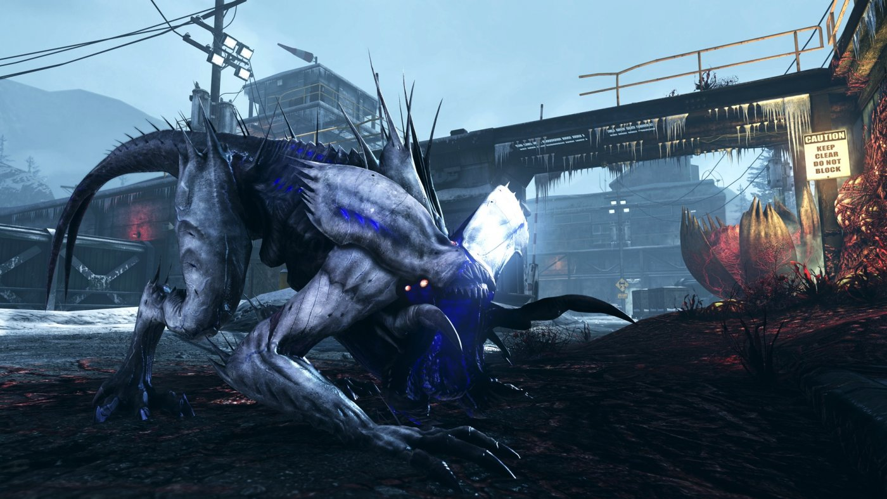

Estinzione
Estinzione è una modalità cooperativa per 1-4 giocatori che mescola in modo innovativo battaglie per la sopravvivenza contro ondate di nemici, dinamiche difensive, gestione delle risorse e sistema di progressione a classi. Collabora con una squadra di specialisti contro mostruose creature che hanno invaso una remota città del Colorado
LA TUA SQUADRA DI ESTINZIONE:
All'inizio della partita, ogni membro della squadra sceglie tra una delle diverse classi personalizzabili: medico, geniere, difensore e specialista armamenti.
Mentre la squadra combatte per le strade di Caldera Peak, i giocatori ottengono valuta che può essere utilizzata per acquistare vari potenziamenti e abilità dei personaggi. La squadra può anche recuperare armi ed equipaggiamenti speciali abbandonate da truppe che hanno fallito in precedenza.
I frenetici combattimenti di Estinzione presentano una serie di impegnativi scenari difensivi. I membri della squadra devono collaborare per respingere ondate di nemici alieni e neutralizzare tutti i loro alveari. La squadra può fortificare la sua posizione utilizzando dotazioni militari e difese improvvisate: recinti elettrici, trappole infuocate, pozze elettrificate, torrette armate e droni.
Durante ogni sessione di gioco i giocatori otterranno inoltre Punti Abilità utilizzabili per potenziare il loro equipaggiamento, che permettono di sviluppare abilità altamente specializzate nel corso di una singola partita. Nessuna partita sarà uguale alla precedente, perché i potenziamenti effettuabili sul momento possono determinare la strategia di tutta la squadra. Le sfide di squadra, inoltre, permettono di ottenere Punti Abilità extra per potenziare ulteriormente le proprie capacità.
IL TUO OBIETTIVO:
Il tuo obiettivo principale è distruggere la minaccia aliena con l'aiuto di un ordigno nucleare. Dopo averlo trovato la squadra deve armarlo e attraversare nuovamente la città per fuggire a bordo dell'elicottero; una corsa frenetica contro un orrore alieno!
SUGGERIMENTI PER VINCERE:
I giocatori possono equipaggiare fino a quattro accessori sulle armi e usare bengala, sistemi Trophy, munizioni speciali e anche un "coltello Hypno" in grado di trasformare le creature nemiche in feroci alleati per un periodo di tempo limitato.
Il nuovo sistema Spesa di combattimento di Estinzione permette l'accesso a un gran numero di equipaggiamenti bonus offensivi, difensivi e di supporto che possono cambiare le sorti di una battaglia disperata. Per sconfiggere l'orda serviranno comunicazione e gioco di squadra; per vincere sarà fondamentale utilizzare oggetti di supporto (corazza, esplosivi, munizioni incendiarie) e condividerli con la squadra.
Una serie di punteggi, progressi e "fughe" nelle classifiche: confronta le tue prestazioni con quelle dei tuoi amici e dei giocatori di tutto il mondo!

Torna a Home
Questo sito e' stato relizzato da Mussin Machhour